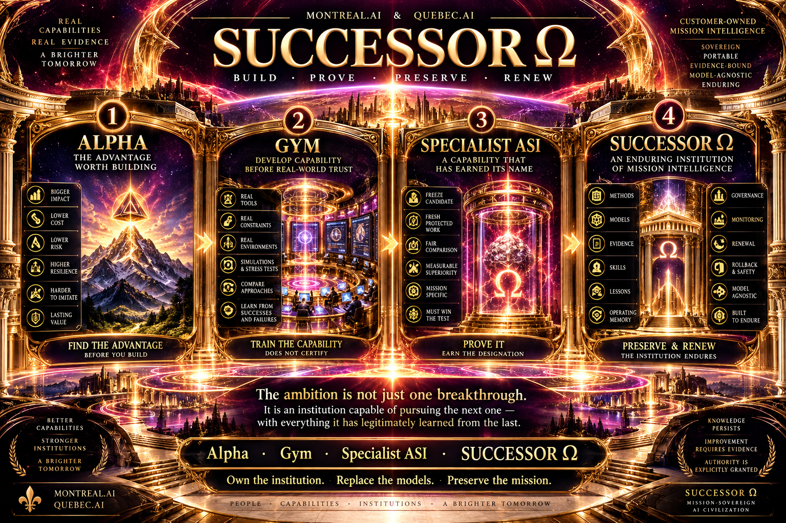

Ride the frontier.
Connect an actually accessible AI advance to a consequential construction that earlier methods could not resolve. A release is a challenger, not automatic approval.
TRANSFORMATIONAL INTELLIGENCE ∞
Turn the next advance in AI into your next ability to autonomously discover at scale.
Invent the means. Expand what becomes possible.
Compound the ability to discover.
This edition contains the paper, executable analytical studies and a publication toolkit. The autonomous discovery foundry is the engineering programme—not a finished product included in this download. No new physical measurements or actual revenue are claimed.
THE ADVANTAGE WORTH BUILDING
GENESIS proposes an institution that transforms relevant AI advances into usable capabilities, then tests whether those capabilities improve what can be constructed next. The ambition is not simply more discoveries. It is an expanding ability to discover.
Connect an actually accessible AI advance to a consequential construction that earlier methods could not resolve. A release is a challenger, not automatic approval.
Build the missing observation, representation, algorithm or productive arrangement. A better strategy can also remove the need for a missing resource.
Retain executable methods and the conditions in which they work. Test their contribution on genuinely different work, with complete costs and strong alternatives.
TRY THE ANALYTICAL WITNESS
One measurement, y₊ = s + c, cannot distinguish two hidden effects. The supplied construction adds y₋ = s − c. Explore the resulting observer—and the unmodeled effect that breaks its guarantee.
Interactive arithmetic only. No AI call, sensor, EIT simulation or experimental observation. Python's exact rational study is authoritative for the paper's results.
ŝ = (y₊ + y₋) / 2
ĉ = (y₊ − y₋) / 2
At zero measurement noise, the two effects are recovered exactly.
Both observations receive d. The illustrated noise is zero; the paper separately proves the 0.1 bound for bounded measurement errors when d is absent. Ordinary algebra ties this construction.
EVIDENCE YOU CAN RUN
| Study | Result | What it does not establish |
|---|---|---|
| Observation construction | 8 rows; 6 full-rank; 225 checks; 0.1 noise bound. | A physically invented observation or superiority over conventional algebra. |
| Constructor reuse | 4 coefficient variants; 1,764 exact checks. | Autonomous cross-domain discovery or a better inventor. |
| Selective replay | 25 vs. 5 evaluations; identical completions; separately implemented conventional control. | Real-world relevance accuracy or total-cost savings. |
| Adversarial replay | Inaccessible and revoked capabilities; a missed alternative; net savings of +17, −5 and −13 under stipulated costs. | A live permission controller, real provider access or observed economics. |
| Funding & lag | 44 vs. 80 opening units; same surplus of 40; conditional adoption-lag identity. | Customer demand, actual cash, or a measured exponential growth law. |
68 analytical and release-integrity tests. Ordinary methods may tie. Newer capabilities may not help. A faster-looking policy can lose after complete costs.
Extract the full source package. With Python 3.10 or newer, run:
python3 verify.pyNo third-party Python libraries, model account, network or equipment are needed for the analytical check. The code was executed on the recorded Linux environment; a successful test is not a claim of universal platform compatibility.
Choose a new output directory so previous evidence remains intact:
python3 study/companion.py --output /absolute/new/genesis-results
python3 verify.py --fullThe full check needs TeX Live and Poppler. It preserves the inspected PDF and rebuilds into build/. The README lists the prerequisites.
SUCCESSOR Ω
Alpha selects the advantage. The Gym develops capability. Protected qualification tests the claim. SUCCESSOR Ω retains useful methods, evidence and operating history while renewing their scope.
“Specialist ASI” in the supplied artwork is project terminology, not a certification or a general-superintelligence claim. The diagram is conceptual, not performance evidence.

PUBLICATION, WITHOUT OVERCLAIMING
The publication toolkit prepares a static site and versioned source archive, then supports a byte-for-byte check against the files served by your chosen host. It does not launch agents, enable hardware, create a business account or publish anything automatically.